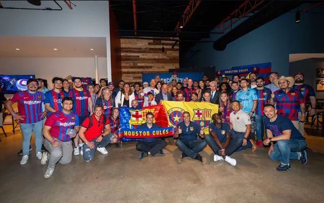

Ultimas novedades
Texas respira aire azulgrana

Dallas respira barcelonismo y así se ha demostrado este viernes con las decenas de aficionados que se concentraron frente al hotel donde se aloja el FC Barcelona para dar la bienvenida a los jugadores del equipo. Este entusiasmo ha tenido su continuación unas horas más tarde, en el Communitty Beer Co de la ciudad tejana, donde más de 120 peñistas de la Penya Barça Austin y la Penya Azulgrana Houston, así como de la PB Dallas, esta última en proceso de reactivación, festejaron la presencia de los miembros de la Junta Directiva que asistieron al acto y que recibieron el calor de los aficionados entre cánticos y gritos de apoyo.